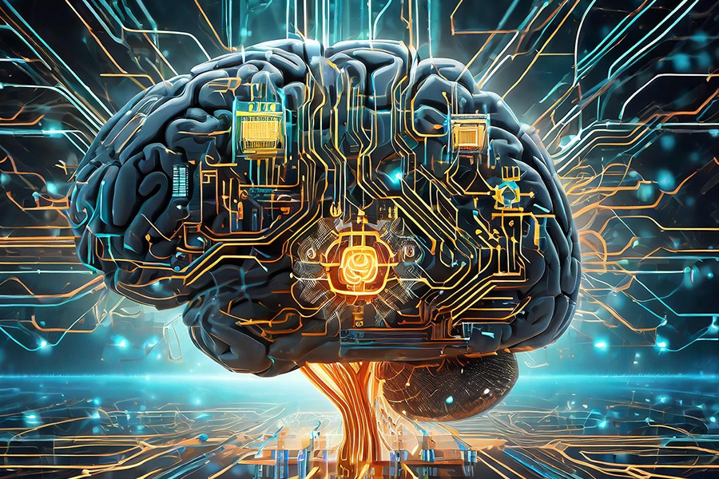
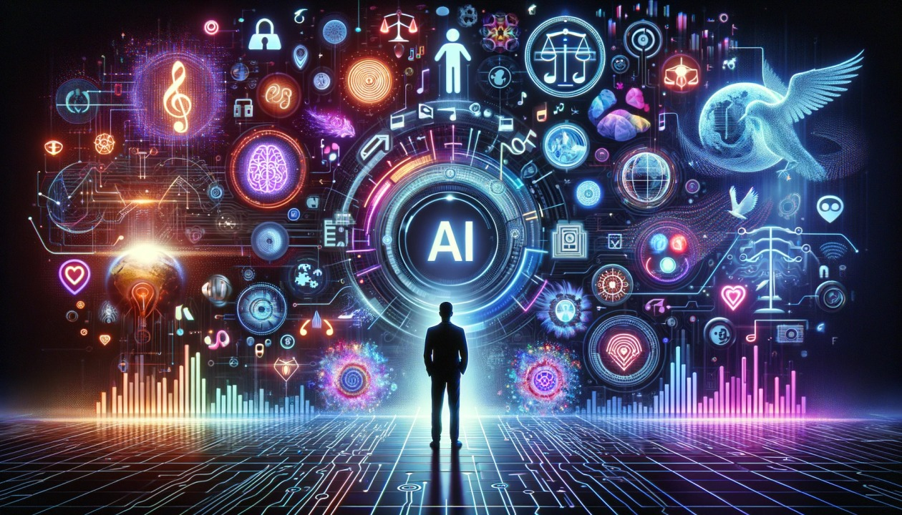

O Impacto da Inteligência Artificial na Sociedade
A Inteligência Artificial (IA) está cada vez mais presente em nosso cotidiano. Desde sistemas de recomendação até carros autônomos, a IA tem mudado a forma como vivemos, trabalhamos e aprendemos.
Principais áreas em que a IA é aplicada:
- Saúde
- Diagnóstico por imagem
- Previsão de epidemias
- Cirurgias assistidas por robôs
- Educação
- Plataformas personalizadas de ensino
- Correção automática de provas
- Chatbots para apoio ao aluno
- Varejo e Marketing
- Recomendação de produtos
- Análise de comportamento do consumidor
- Atendimento automático via IA

Apesar dos benefícios, também existem desafios:
Ética e privacidade dos dados
Possíveis substituições de empregos
Riscos de viés nos algoritmos

Como se preparar para o futuro com a IA?
- Aprender sobre tecnologia e programação
- Desenvolver pensamento crítico
- Trabalhar habilidades humanas
- Empatia
- Trabalho em equipe
- Resolução de problemas complexos
Conclusão: A IA veio para ficar. Cabe a nós nos adaptarmos e aproveitarmos seu potencial de forma consciente.